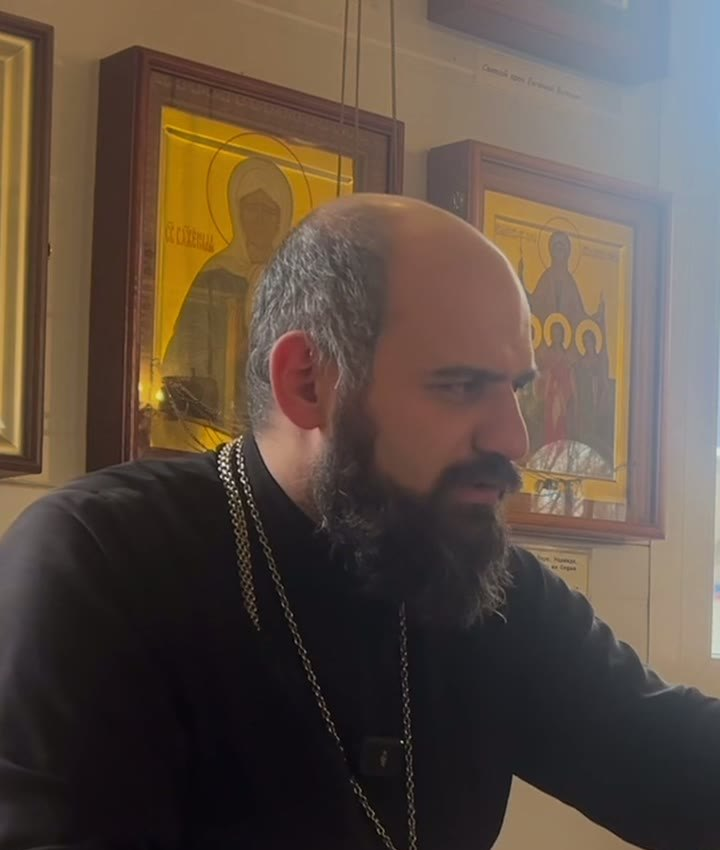
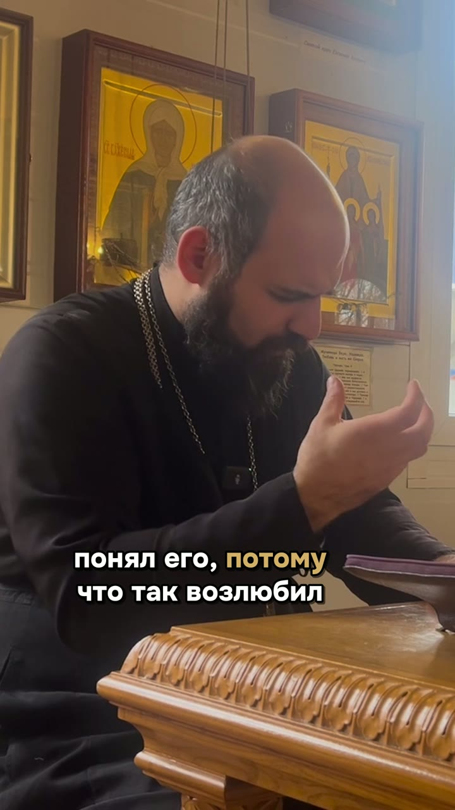

Я посмотрел Вашу беседу о Священном Писании от 8 ноября, все сорок минут, и мы с командой разобрали её слово за словом. Пишу, что увидели. Сначала о том, что у Вас уже есть, потом о мелочах, которые мешают роликам дойти до людей в соцсетях.
Игорь Ильин«Бизнес по-русски»
Что у Вас уже есть
Монтажом можно убрать лишнее, но нельзя добавить живого. У Вас живое есть, и вот где мы это услышали.
«Господь хотел, чтобы Авраам сроднился Ему, понял Его... и чтобы у Бога был повод ответить взаимностью».
Вас спросили, зачем Бог велел Аврааму принести в жертву сына. Вы ответили коротко и неожиданно.
«Хоть поскрипываешь, приходишь, каешься, но дальше продолжаешь его нести... ты не выпустил его абсолютно из рук».
Человеку, который думает, что всё пропало, это нужнее любой морали.
«Страдания без смысла, они невыносимы».
Такую фразу человек унесёт с собой и перешлёт другу.
«Бог, который трудился, Его руки были замозолены от труда, а мне, лентяю, надо поднимать свою попу».
Мужчина, который слышит такое от священника, понимает: со мной говорят на равных.
«Вот я, когда первый раз со своей супругой, ещё деток у нас не было, мы были на этой постановке... меня прям пробило».
Одна история из жизни держит человека у экрана лучше трёх цитат.
Ролик про Авраама
Это Ваш ответ про Авраама, 42 секунды. Вопрос из зала идёт текстом сверху, ответ звучит Вашим голосом с первой секунды. Мы ничего не переставляли и ничего за Вас не досказали, только убрали лишнее между фразами.
Я посмотрел, и мне очень понравилось.
ИгорьПочему из сорока минут вышло немного
В беседе мы нашли семь ответов, из которых мог бы получиться ролик. Целиком держатся три. Остальные четыре рассыпались не потому, что Вы плохо сказали. Просто беседа в храме и ролик в телефоне устроены по-разному.
Люди пришли слушать и дают Вам всё время беседы.
Человек листает: понял, о чём речь, - остался, не понял - пролистал дальше.
Четыре мелочи
В живой беседе это нормально: вставка, «как бы», «вот, просто, вот», потом возврат. Но ролик режется только между фразами, и если мысль не закрыта, кусок не встаёт.
Слово посередине мы никогда не режем, поэтому монтажу нужен зазор между фразами.

В ролике про Авраама Вы почти всё время смотрите на аналой, а когда наклоняетесь к книге, камера видит макушку. Человек в телефоне должен видеть глаза: тогда он чувствует, что говорят ему.
В телефоне Ваше лицо выходит маленьким, за головой иконы, рядом прихожане, которых мы без их согласия не показываем.
Как записываться
Первый
Не отказывайтесь от неё: вопросы из зала живые, а живое и смотрят. Добавьте три вещи.
И после беседы десять минут: два-три лучших ответа скажите ещё раз прямо в камеру, коротко, как будто перед Вами один человек. Это и будут самые сильные ролики недели.
Второй
Один вечер в неделю, десять тем, каждая на 40-60 секунд.
Пятьдесят тем у нас уже подобраны, первые десять как раз на один вечер.
Ответ на минуту
«Зачем Бог велел Аврааму убить долгожданного сына?»
«Когда человек переживает невероятное испытание, его может понять только тот, кто то же самое пережил».
«Чтобы у Бога был повод ответить взаимностью».
«Крепко обнимаю. С Богом».
Сорок-шестьдесят секунд. Больше ничего не нужно.
Не останавливайтесь и не начинайте всё заново. Вдох, и повторите фразу с начала, мы возьмём лучший дубль. Ошибаются все, а смотрят того, кто записал и выложил.
От Игоря
Четыре вещи про картинку. Это мелочи, но по ним человек за две секунды решает, смотреть дальше или листать.
Прикрепите её ближе к вороту. Чем ближе микрофон ко рту, тем чище голос и тише шорох одежды и эхо храма.
Телефон стоит вертикально, в кадре Вы по грудь. На маленьком экране лицо должно быть крупным, иначе его не разглядеть.
Садитесь так, чтобы свет падал на лицо. Если за спиной окно или яркая стена, камера подстроится под фон: он выйдет засвеченным, а лицо тёмным.
Чаще всего она нужна, хотя и не всегда: при хорошем дневном свете можно обойтись без неё. Но лучше купить. Качественная картинка - это уважение к зрителям.
Вы говорите о вере так, что люди задают вопросы и запоминают ответы. Наша работа - донести это до тех, кто листает соцсети.
Остальное сделаем мы.
Игорь Ильин«Бизнес по-русски»